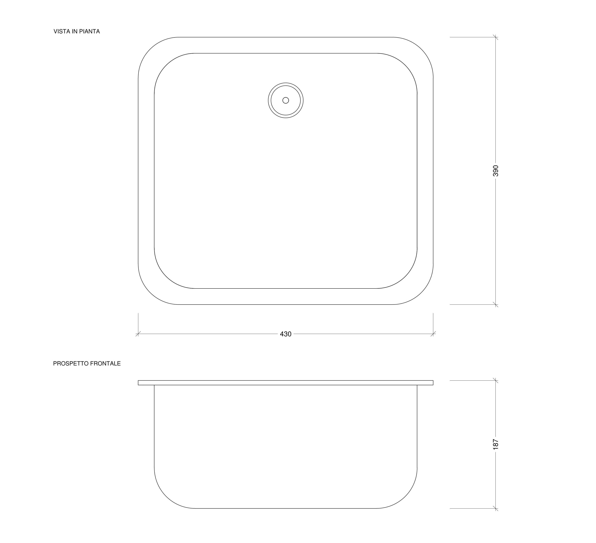
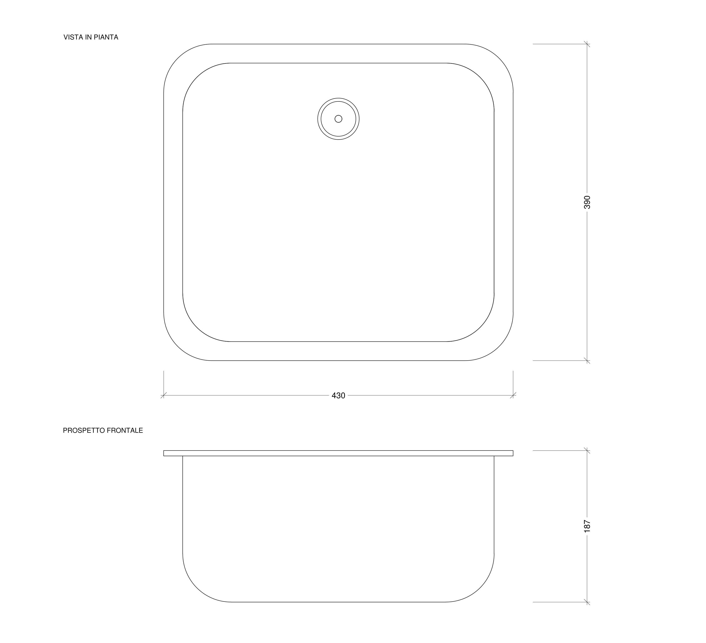
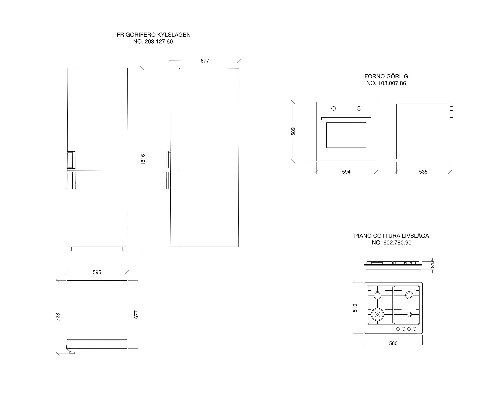
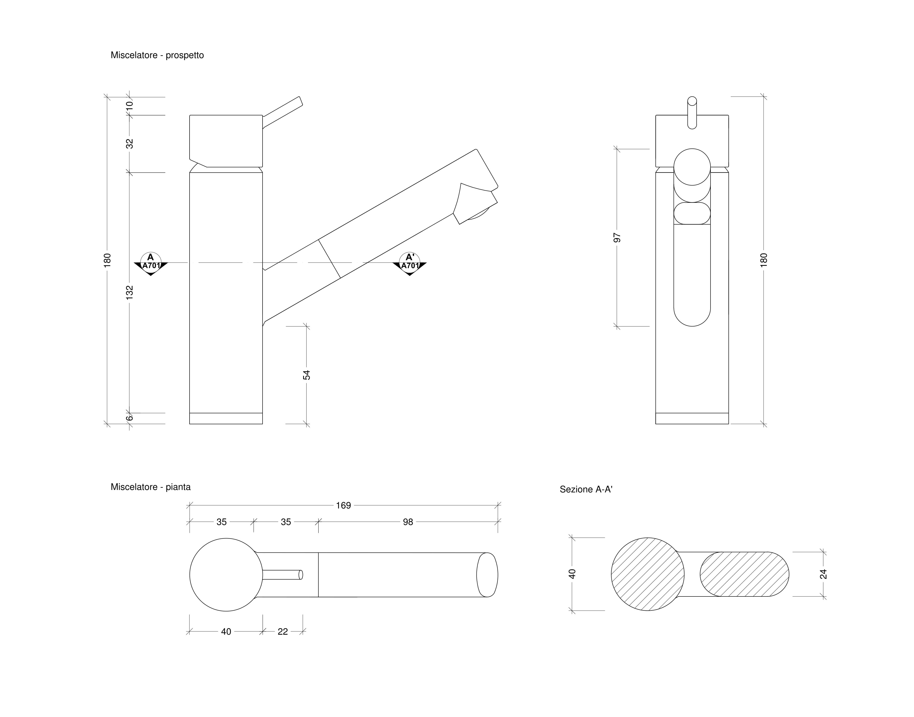

{kind=link}
LAVELLO FYNDIG no.591.580.03
-Lavello da incasso a una vasca in accaio inossidabile;
-Materiale fonoassorbente sotto il lavello;
Larghezza: 45 cm
Profondità: 39 cm
Download


Villa Verde - Progetto cucina
La proposta di arredamento della cucina per Villa Verde segue il principio della funzionalità senza però rinunciare al'estetica. Il risultato è una cucina abitabile dotata dei comfort indispensabili e che si presenta con contrasti di chiari e scuri. Da un lato della stanza sono disposti il tavolo e le sedie sono in legno laccato bianco, il tavolo è adiacente al muro. Al lato opposto abbiamo il piano cucina costituito dai mobili con cassetti, con al centro il piano cottura ed il forno, il lavandino è disposto nell'angolo a sinistra, mentre l'angolo a destra è occupato dal frigorifero. Sopra il piano della cucina sono appesi una serie di pensili ad ante; e la cappa sopra il piano cottura. Il pavimento è in Gres a piastrelle (30x30),colore sabbia e il paraschizzi è in ceramica a piastrelle (15x15) lucide nere. il battiscopa è in ceramica ad effetto legno.
LAVELLO FYNDIG no.591.580.03
-Lavello da incasso a una vasca in accaio inossidabile;
-Materiale fonoassorbente sotto il lavello;
Larghezza: 45 cm
Profondità: 39 cm
Download

SEDIA INGOLF no.701.032.50
- Parti principali: Legno massiccio;
- Sedile: Fibra di legno;
- Tutti gli elementi: Lacca acrilica;
Larghezza: 43 cm
Profondità: 52 cm
Altezza: 91 cm
Larghezza sedile: 41 cm
Profondità sedile: 38 cm
Altezza sedile: 44 cm
Download


TAVOLO LERHAMN no.102.642.79
- Struttura: Pino massiccio, Mordente, Vernice acrilica trasparente;
Lunghezza: 118 cm
Larghezza: 74 cm
Altezza: 73 cm
Download


FRIGORIFERO KYLSLAGEN no.203.127.60
-Superficie: acciaio inox;
Larghezza: 59.5 cm
Profondità: 67.7 cm
Altezza: 184.5 cm
Download

STRUTTURA PER MOBILE no.602.604.29
- Struttura principale: Truciolare, Lamina di melammina, Plastica propilenica;
- Pannello di fondo: Fibra di legno, Lacca acrilica;
- Traversa anteriore: Acciaio, Galvanizzato;
Larghezza: 120 cm
Profondità: 61.0 cm
Altezza: 90.0 cm
Download


MISCELATORE YTTRAN no.403.059.47
- Superficie in ottone cromato;
- Cartuccia con dischi in ceramica;
Larghezza: 4 cm
Lunghezza: 16.9 cm
Altezza: 18 cm
Download

LAMPADA A SOSPENSIONE FOTO no.401.928.51
- Luce diretta: ideale per illuminare un tavolo o un bancone bar;
Diametro: 38 cm
Lunghezza filo elettrico: 1.6 m
Altezza totale: 1.8 m
Download


PIANO COTTURA LIVSLÅGA no.602.780.90
- Piano cottura a gas, acciaio inox;
Larghezza: 58.0 cm
Profondità: 51.0 cm
Download

FORNO GÖRLIG no.103.007.86
- Forno elettrico, acciaio inox;
Larghezza: 59.4 cm
Profondità: 56.0 cm
Altezza: 58.9 cm
Download

{kind=link}
{kind=link}